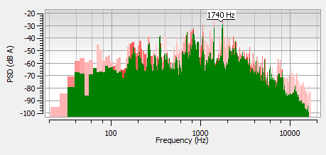
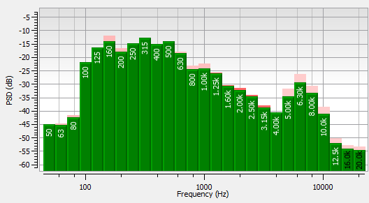
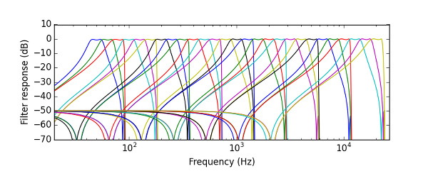
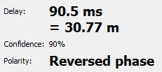
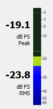
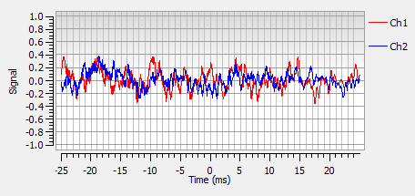

The purpose of Friture is to help analyze an audio signal to understand the characteristics of this signal (fundamental, harmonics, feedback, etc.), to describe the source/room/receiver behaviour (reverberation, gain peaks, etc.), or to make adjustments in the preprocessing (room equalization). This is achieved by providing a set of widgets to visualize audio data:
The 2D spectrogram widget displays audio data versus both frequency and time, in a rolling-against-time fashion. The time-frequency resolution of the display is fixed by the window length of the Fourier transform (as for the minimum response time of the spectrum widget). It is also limited by the resolution of your display in pixels.

The spectrum widget displays audio data versus frequency. This is very appropriate to visualize the characteristics of tha signal: fundamental frequency, harmonics, feedback frequencies, etc.
The response time of the display is configurable. The minimum response time is linked to the window length of the Fourier transform. For a FFT of 1024 points, and given the sampling rate of 48000 Hz used by Friture, the minimum response time is 1024/48000 = 21.3 ms.
Additionally, the widget draws peaks for each frequency component. These peaks mark the recent maxima of the spectrum, and start to decrease shortly after the peak was reached. Finally, a label identifies the frequency of the global maximum of the spectrum.

The octave spectrum widget displays audio data versus time, similarly to the Spectrum widget. Audio data is grouped in frequency bins with fraction-of-octave widths. Each frequency bin is the result of a fraction-of-octave filter.
The following figure illustrates the frequency response of the filter bank used with the 3 bands-per-octave setting. The filters for each octave are applied after decimations of the signal. Both the band-pass filters and the low-pass decimation filters are implemented as elliptic IIR filters. The -3dB width of each filter is constant on a logarithmic frequency scale.


The delay estimator widget computes the time delay between the 2 input channels. This is usehul to align speakers in a room.
The delay estimation is achieved using a cross-correlation algorithm. It only works when the 2-channel mode is enabled.
References:

The level widget displays peak power (25 ms response time, i.e. instantaneous) and RMS power (300 ms response time) in dBFS (dB Full Scale). When the 2-channels mode is enabled, it displays the levels of each channel on a separate scale.

The scope widget displays audio data versus time. The time scale is configurable. The display is synchronized with regards to a leading-edge of the signal positioned in the center of the time axis, as a traditional scope would do.
{kind=link}